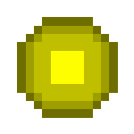
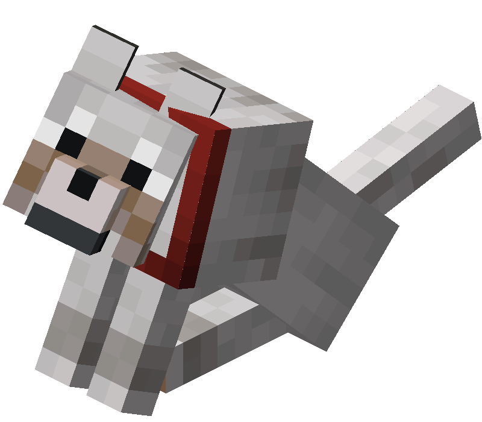
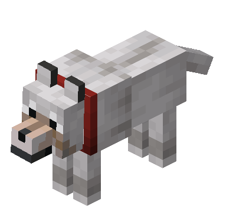

本周页面
重锤
-
关于Minecraft Dungeons中的类似且英文名相同的物品，请见“MCD:锤子”。
重锤（Mace）是一种可以提高下落攻击伤害并提供击退效果的近战武器，同时也可以加速挖掘方块[仅基岩版][失效：BE 1.21.20]。
生成
未驯服的狼会在不同的生物群系中的草方块、砂土、灰化土、雪块或雪上生成不同的变种，具体如下表所示：
| 狼的变种 |
生物群系 |
每群数量 |
| 苍狼 |
针叶林 |
4 |
| 森林狼 |
森林 |
4 |
| 灰狼 |
积雪针叶林 |
4 |
| 黑狼 |
原始松木针叶林 |
2~4 |
| 栗色狼 |
原始云杉针叶林 |
2~4 |
| 赭红狼 |
稀疏丛林 |
2~4 |
| 斑点狼 |
热带高原 |
4~8 |
| 条纹狼 |
疏林恶地 |
4~8 |
| 雪狼 |
雪林 |
1 |
- 在丛林和竹林使用刷怪蛋及命令/summon召唤的狼为赭红狼；
- 在热带草原和风袭热带草原召唤的狼为斑点狼；
- 在恶地和风蚀恶地召唤的狼为条纹狼；
- 在其他生物群系召唤的狼均为苍狼。
有10％的狼会生成为幼年个体。
掉落物
狼被玩家或其他驯服的狼杀死时，会掉落1~3

经验值。
与其他幼年动物类似，杀死幼年狼不会掉落经验。
在基岩版中，杀死驯服的狼不会掉落经验。
行为
狼有3种状态：
- 野生的狼:
- 每一只眼有一个白色和一个黑色的像素。
- 尾巴向上抬起36°（0°时垂直向下）。
- 愤怒的狼:
- 野生的狼有攻击目标时变为愤怒的狼。
- 紧皱眉头，双眼发红，嘴角上扬，并且不断发出愤怒的嚎叫。
- 尾巴向上抬起88.2°。
- 愤怒的狼不能被拴绳拴住，但被拴着的野生的狼变为愤怒时拴绳不会解开。
- 此时无法使用骨头驯服，但仍可以喂食肉使其恢复生命值或加快成长速度。
- 驯服的狼:
- 野生的狼被玩家驯服后变为驯服的狼，详见下文的 §驯服、生命值和喂养章节。
- 眼神温顺，脖子周围有项圈。
- 尾巴向上抬起
99∘−ℎ𝑚𝑎𝑥−ℎ𝑐𝑢𝑟/ℎ𝑚𝑎𝑥*72∘，其中ℎ𝑐𝑢𝑟为生命值、ℎ𝑚𝑎𝑥为最大生命值。
幼年狼的身体较小、头部较大，与其他动物的幼年形态相似。幼年狼的行为与成年狼相同。
幼年狼不会主动跟随成年狼，除非附近有狼攻击生物时跟随并参与其中。
玩家在距狼8格内的位置手持肉类或骨头时，狼会侧着头，像在乞求食物。
狼离开水或雨[仅JE]中后会甩动身体，甩出水花粒子。在Java版中，狼浸在水或雨中时纹理会加深。
|  |
 |
| 一只驯服的狼正在乞求食物 |
一只驯服的狼正在甩干身上的水 |
攻击
狼以玩家行走的速度接近目标，并会像蜘蛛一样以跳跃攻击，但它在空中并没有伤害。
野生的狼会主动攻击骷髅、凋灵骷髅、流浪者、沼骸、凋灵[仅BE]、兔子、狐狸、绵羊、幼年海龟。驯服的狼站立时只会主动攻击骷髅、凋灵骷髅、流浪者、沼骸和凋灵[仅BE]。驯服的狼坐下时不会主动攻击，正在进行攻击的狼被要求坐下后会停止对目标的攻击。
骷髅、凋灵骷髅[仅JE]、流浪者、沼骸、狐狸、兔子和幼年海龟会主动避开狼。绵羊在未受到攻击时会忽视狼，但被狼攻击后仍然会四处逃窜。杀手兔[仅JE]不但不会逃离，还会主动攻击狼。羊驼会对野生的狼吐唾沫。遇到强度（Strength）为4或5的羊驼，狼总会逃离；对于强度更低的羊驼，狼则会时不时相应地逃离。
狼永远不会攻击苦力怕和恶魂。驯服的狼永远不会攻击自己的主人、与主人同队的生物[仅JE]、拥有相同主人的狼，以及驯服的猫、鹦鹉、马、驴、骡、骷髅马、僵尸马、羊驼、骆驼。
狼会对攻击它或攻击它主人的生物产生敌意，无论是否单次杀死主人，除非攻击者是狼不能攻击的目标。如果一只狼被攻击并对攻击者产生了敌意，附近（以被攻击的狼为中心的33×21×33区域）其他野生的狼和站着的驯服的狼也会对攻击者产生敌意。在和平难度，野生的狼被玩家攻击后仍会变为愤怒状态，但不会对玩家造成伤害。
在基岩版中，当野生的狼发现目标时，即使目标再次获得隐身效果，狼仍然会继续攻击目标并锁定其位置，无论狼是否受伤。
驯服的狼站立时，若其主人攻击了某一生物，狼会对该生物产生敌意，除非该生物是狼不能攻击的目标。
被驯服的狼杀死的生物，即使没有被玩家伤害过，也会掉落通常需要玩家参与击杀才会掉落的经验值和稀有掉落物。
受伤害行为
驯服的狼装备狼铠时，受到大多数类型的伤害时不减少生命值，改为使狼铠减少与所受伤害值（向上取整）相等的耐久度。狼铠会根据剩余耐久度呈现不同程度的开裂纹理。
狼铠无法抵消下列类型的伤害（在Java版中它们带有伤害类型标签 #bypasses_wolf_armor）：
- 魔法伤害
- 挤压
- 溺水
- 脱水
- 冰冻
- 窒息
- 出界
- 饥饿
- 荆棘
- 凋零
- 虚空
- /kill
移动
与驯服的狼交互且不进行喂食操作，或是成功驯服一只狼时[仅JE]，狼会坐下。再次与之交互时，它会站立。
坐着的狼被推入水中或受伤时会站起来。在Java版中，如果主人退出了多人游戏，其驯服的狼将一直坐着。
站立时，驯服的狼会以游荡的方式跟随玩家，在10格外时会直接走向玩家，在12格外时会传送到玩家附近。坐着时，它们不会跟随玩家。
传送
驯服的狼会在12格外传送至其主人附近的方块上（若有）。
传送会重置狼的攻击行为，因此，如果狼在攻击生物时传送到玩家身边，它将继续跟随玩家。
驯服的狼有可能传送到一个无法进入的位置（例如冰面下）并因窒息而受伤或死亡。
狼不会传送的情况：
-
狼被要求坐下。
- 狼被推入水中或受伤时会起身，这可能导致传送。
- 如果狼在一个已加载的区块中，且距离较远的玩家被生物伤害时，狼有可能起身并导致传送，接着攻击该生物，然后又坐下。
- 狼正在对生物造成伤害。一旦该生物死亡，狼就会尝试传送。
- 狼坐在矿车或船上。
- 狼被拴绳拴在栅栏或墙[仅BE]上。
- 狼所在位置未被加载。
-
以玩家为中心的5×3×5的区域内所有位置都不满足以下条件的任何一个：
- 位置可以被寻路。
- 位置上不存在其他实体可以与狼产生碰撞。
- 玩家在其他维度；狼将待在所在维度直到玩家回来[仅JE]。然而，可以事先把狼推入传送门将其先传送至其他维度。
狼的传送过程不会发出声音。
驯服、生命值和喂养
玩家可对野生的狼使用骨头以尝试驯服。成功驯服所需的骨头数量是随机的，每次使用骨头都有1⁄3的概率驯服狼，也就是说，驯服一只狼平均需要3个骨头。狼被驯服后，其纹理上会出现一个红色的项圈，并且不再接受骨头。玩家可以驯服的狼的数量没有限制。
玩家可对自己驯服的狼使用染料来改变其项圈的颜色。
玩家还可对自己驯服的成年狼使用狼铠，使其获得11（ × 5.5）护甲值；使用犰狳鳞甲可以修复其装备的狼铠；使用剪刀可以卸下其装备的狼铠。
驯服的狼的生命值不低于20（♥ × 10）时，空闲音效会出现哈气声；驯服的狼的生命值低于20（♥ × 10）时，空闲音效会出现哀鸣声。
与其他可驯服生物一样，驯服的狼死亡时会给其主人[仅JE]/世界中的所有玩家[仅BE]显示一条死亡消息。
喂食
驯服的狼的生命值可以通过喂食肉类来恢复。详见下表。任何肉类给狼恢复的生命值都为给玩家恢复饥饿值的两倍。
所有的食物都不会有任何恢复生命值以外的效果，如喂食腐肉和生鸡肉不会使狼受到饥饿效果。
在基岩版中，使用兔肉煲喂食狼时会回收一个碗。
| 食物 |
回复生命值 |
| 生鸡肉 |
4（♥♥） |
| 熟鸡肉 |
12（♥ × 6） |
生猪排
生牛肉
生兔肉
|
6（♥♥♥） |
熟猪排
牛排
|
16（♥ × 8） |
| 腐肉 |
8（♥♥♥♥） |
| 生羊肉 |
4（♥♥） |
| 熟羊肉 |
12（♥ × 6） |
|
|
| 熟兔肉 |
10（♥♥♥♥♥） |
河豚[仅BE]
热带鱼[仅BE]
|
2（♥） |
生鳕鱼[仅BE]
生鲑鱼[仅BE]
|
4（♥♥） |
| 熟鳕鱼[仅BE] |
10（♥♥♥♥♥） |
| 熟鲑鱼[仅BE] |
12（♥ × 6） |
| 兔肉煲[仅BE] |
20（♥ × 10） |
繁殖
喂食生命值已满的驯服的狼且喂食的物品不是河豚、热带鱼、生鳕鱼、生鲑鱼、熟鳕鱼、熟鲑鱼、兔肉煲时[仅BE]可以使其进入“求爱模式”，产生爱心粒子，并且两只狼都站立时才能繁殖出幼年狼。狼成功繁殖时掉落1–7 经验值，且在5分钟内无法再次繁殖。
繁殖出的幼年狼会出生在其中一只狼的碰撞箱内，并选择该狼的主人作为自己的主人。
- 如果两只狼属于同一个玩家，那么其繁殖出的幼年狼也会属于这个玩家。
- 两只狼所属的玩家不同时，如果繁殖过程中其中一只狼被命令坐下或无法找到它的主人[仅JE]，那么繁殖出的幼年狼属于另一只狼的主人；否则繁殖出的幼年狼属于更早被加载的狼的主人。
繁殖出的幼年狼是已驯服的，会遗传第一个被喂食的狼的毛色。幼年驯服狼比起成年有更高的频率随机走动，显得更加活泼好动。
可以给幼年狼喂食肉类加快其生长，每次喂食可以减少约剩余成长时间的10%。
在Java版中，喂食野生的狼时也会产生爱心粒子，但它们不会进入“求爱模式”；在基岩版中，玩家无法喂食野生的狼。
音效
java版:
音效
基岩版:
音效
数据值
ID
java版:
| 名称 |
命名空间ID |
本地化键名 |
| 狼 |
wolf |
entity.minecraft.wolf |
基岩版:
| 名称 |
命名空间ID |
本地化键名 |
| 狼 |
wolf |
entity.wolf.name |
实体数据
Java版:
狼有与之相联系的包含许多该生物属性的存档数据。
-
实体共通标签
生物共通标签
AI生物共通标签
可成长生物共通标签
动物共通标签
可驯服动物共通标签
中立的生物共通标签
- CollarColor：狼项圈的颜色，颜色取对应染料序号的颜色。即使是野生的狼也仍然存在此标签，但项圈不会渲染。如果设置值超出值域则设置为0（白色）。
- variant：（狼变种命名空间ID）表示狼的变种。如果设置值无效则设置为pale。
数据驱动性
在Java版中，狼的某些数据可通过数据包data/minecraft/wolf_variant/<狼变种命名空间ID>.json文件加载到注册项中。
JSON格式
- 根标签
- angry_texture: （命名空间ID，默认为minecraft:entity/wolf/wolf_<狼变种命名空间ID>_angry）狼处于愤怒状态时所加载的纹理文件。
- biomes: 一个或多个生物群系的引用（可以为生物群系命名空间ID或生物群系标签或包含生物群系命名空间ID的列表）狼生成时所在的生物群系。
- tame_texture: （命名空间ID，默认为minecraft:entity/wolf/wolf_<狼变种命名空间ID>_tame）狼被驯服后所加载的纹理文件。
- （命名空间ID，默认为minecraft:entity/wolf/wolf_<狼变种命名空间ID>）狼的默认纹理文件。
进度
往期由于html写de太垃圾了!,所以就用Markdown重写了!如果要看，请点击
这里
其它你可能 感兴趣 的内容
你可能感兴趣(PvP资源包)